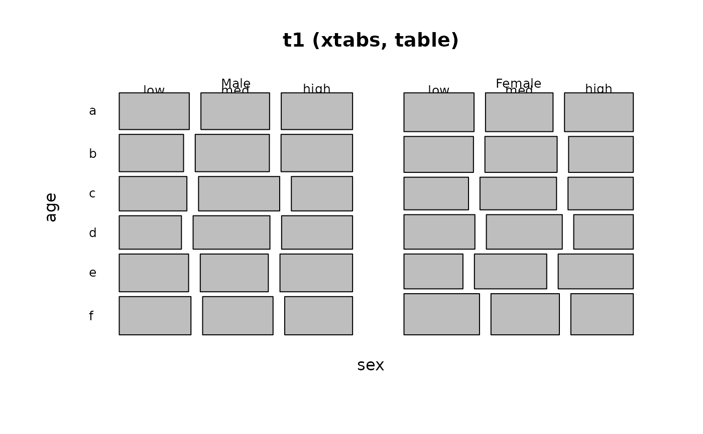

Collapse Levels of a Table
CollapseTable.RdCollapse (or re-label) variables in a
a contingency table or ftable object by re-assigning levels of the table variables.
CollapseTable(x, ...)
Arguments
| x | A |
|---|---|
| ... | A collection of one or more assignments of factors of the table to a list of levels |
Details
Each of the ... arguments must be of the form
variable = levels, where variable is the name of one of the table
dimensions, and levels is a character or numeric vector of length equal
to the corresponding dimension of the table. Missing argument names are allowed and will be interpreted in the order of the dimensions of the table.
Value
A table object (even if the input was an ftable), representing the original table with
one or more of its factors collapsed or rearranged into other levels.
Author
Michael Friendly <friendly@yorku.ca>, Andri Signorell <andri@signorell.net>
See also
margin.table "collapses" a table in a different way, by
summing over table dimensions.
Examples
# create some sample data in table form sex <- c("Male", "Female") age <- letters[1:6] education <- c("low", 'med', 'high') data <- expand.grid(sex=sex, age=age, education=education) counts <- rpois(36, 100) data <- cbind(data, counts) t1 <- xtabs(counts ~ sex + age + education, data=data) Desc(t1)#> ------------------------------------------------------------------------------ #> t1 (xtabs, table) #> #> Summary: #> n: 3'699, 3-dim table: 2 x 6 x 3 #> #> Chi-squared test for independence of all factors: #> X-squared = 22.094, df = 27, p-value = 0.7326 #> #> education low med high Sum #> sex age #> Male a 106 88 107 301 #> b 97 84 103 284 #> c 95 127 115 337 #> d 105 107 109 321 #> e 100 106 95 301 #> f 94 102 87 283 #> Female a 110 107 105 322 #> b 113 112 110 335 #> c 93 103 107 303 #> d 101 113 109 323 #> e 94 114 86 294 #> f 93 105 97 295 #> Sum a 216 195 212 623 #> b 210 196 213 619 #> c 188 230 222 640 #> d 206 220 218 644 #> e 194 220 181 595 #> f 187 207 184 578 #>## age a b c d e f ## sex education ## Male low 119 101 109 85 99 93 ## med 94 98 103 108 84 84 ## high 81 88 96 110 100 92 ## Female low 107 104 95 86 103 96 ## med 104 98 94 95 110 106 ## high 93 85 90 109 99 86 # collapse age to 3 levels t2 <- CollapseTable(t1, age=c("A", "A", "B", "B", "C", "C")) Desc(t2)#> ------------------------------------------------------------------------------ #> t2 (table) #> #> Summary: #> n: 3'699, 3-dim table: 2 x 3 x 3 #> #> Chi-squared test for independence of all factors: #> X-squared = 16.651, df = 12, p-value = 0.1632 #> #> education low med high Sum #> sex age #> Male A 203 172 210 585 #> B 200 234 224 658 #> C 194 208 182 584 #> Female A 223 219 215 657 #> B 194 216 216 626 #> C 187 219 183 589 #> Sum A 426 391 425 1242 #> B 394 450 440 1284 #> C 381 427 365 1173 #>## age A B C ## sex education ## Male low 220 194 192 ## med 192 211 168 ## high 169 206 192 ## Female low 211 181 199 ## med 202 189 216 ## high 178 199 185 # collapse age to 3 levels and pool education: "low" and "med" to "low" t3 <- CollapseTable(t1, age=c("A", "A", "B", "B", "C", "C"), education=c("low", "low", "high")) Desc(t3)#> ------------------------------------------------------------------------------ #> t3 (table) #> #> Summary: #> n: 3'699, 3-dim table: 2 x 3 x 2 #> #> Chi-squared test for independence of all factors: #> X-squared = 9.320, df = 7, p-value = 0.2305 #> #> education low high Sum #> sex age #> Male A 375 210 585 #> B 434 224 658 #> C 402 182 584 #> Female A 442 215 657 #> B 410 216 626 #> C 406 183 589 #> Sum A 817 425 1242 #> B 844 440 1284 #> C 808 365 1173 #>## age A B C ## sex education ## Male low 412 405 360 ## high 169 206 192 ## Female low 413 370 415 ## high 178 199 185 # change labels for levels of education to 1:3 t4 <- CollapseTable(t1, education=1:3) Desc(t4)#> ------------------------------------------------------------------------------ #> t4 (table) #> #> Summary: #> n: 3'699, 3-dim table: 2 x 6 x 3 #> #> Chi-squared test for independence of all factors: #> X-squared = 22.094, df = 27, p-value = 0.7326 #> #> education 1 2 3 Sum #> sex age #> Male a 106 88 107 301 #> b 97 84 103 284 #> c 95 127 115 337 #> d 105 107 109 321 #> e 100 106 95 301 #> f 94 102 87 283 #> Female a 110 107 105 322 #> b 113 112 110 335 #> c 93 103 107 303 #> d 101 113 109 323 #> e 94 114 86 294 #> f 93 105 97 295 #> Sum a 216 195 212 623 #> b 210 196 213 619 #> c 188 230 222 640 #> d 206 220 218 644 #> e 194 220 181 595 #> f 187 207 184 578 #>## age a b c d e f ## sex education ## Male 1 119 101 109 85 99 93 ## 2 94 98 103 108 84 84 ## 3 81 88 96 110 100 92 ## Female 1 107 104 95 86 103 96 ## 2 104 98 94 95 110 106 ## 3 93 85 90 109 99 86